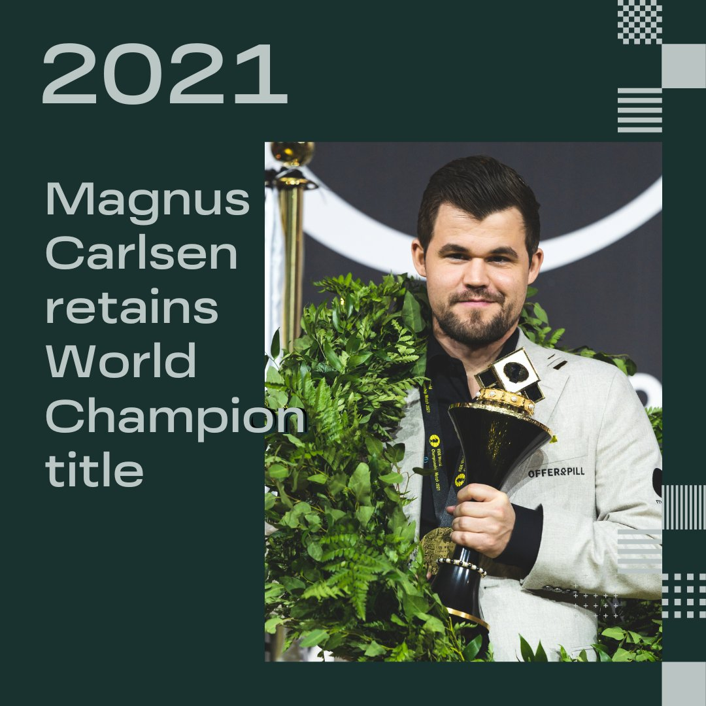
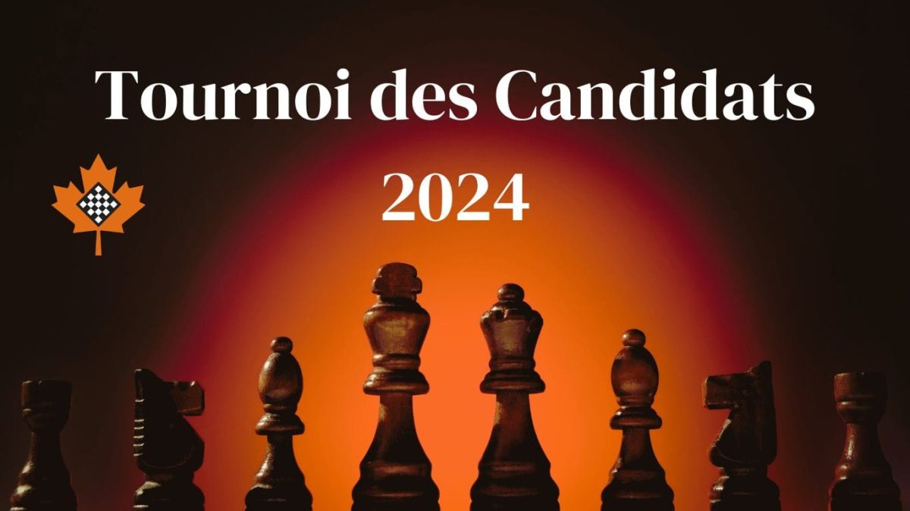
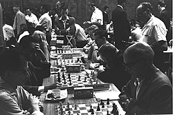
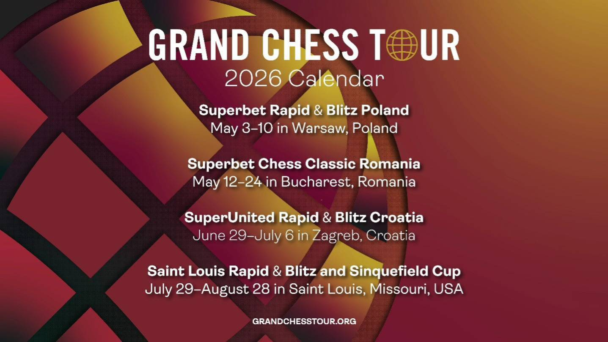

Les grandes compétitions d'échecs
Le monde des échecs professionnel est structuré autour de cycles de qualification mondiaux et de tournois fermés prestigieux.
Le Championnat du Monde (FIDE)
C'est l'objectif ultime. Le champion en titre (actuellement Gukesh Dommaraju) remet sa couronne en jeu contre le vainqueur du Tournoi des Candidats.

Le Tournoi des Candidats
Prochaine édition : Mars - Avril 2026 à Chypre.
8 joueurs d'élite s'affrontent pour obtenir le droit de défier le champion du monde. C'est souvent considéré comme le tournoi le plus stressant de l'année.

Les Olympiades d'Échecs
Prochaine édition : Septembre 2026 à Samarcande (Ouzbékistan).
Une compétition par équipes nationales où plus de 180 pays s'affrontent. C'est la plus grande fête internationale des échecs.

Le Grand Chess Tour
Un circuit de plusieurs tournois (Pologne, Roumanie, Croatie, USA) incluant la célèbre Sinquefield Cup. Il réunit les meilleurs joueurs mondiaux sur toute une saison.

🇳🇱 Le Tata Steel Chess
Surnommé le "Wimbledon des échecs", il a lieu chaque année en janvier aux Pays-Bas. C'est l'un des plus anciens et des plus respectés.